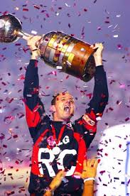

Títulos Tricolor
Tudo o que quiser saber sobre o maior clube da história do Brasil
São Paulo FC
O São Paulo Futebol Clube acumula uma impressionante lista de títulos ao longo de sua história, incluindo conquistas estaduais,
nacionais e internacionais. Entre os principais títulos do clube estão:
- Campeonato Brasileiro: 6 vezes (1977, 1986, 1991, 2006, 2007, 2008)
- Copa Libertadores da América: 3 vezes (1992, 1993, 2005)
- Copa Intercontinental/Campeonato Mundial de Clubes da FIFA: 3 vezes (1992, 1993, 2005)
- Copa Conmebol/Sul-Americana: 1 vez (2012)
- Copa do Brasil: 1 vez (2023)
- Campeonato Paulista: 22 vezes (1931, 1943, 1945, 1946, 1948, 1949, 1953, 1957, 1970, 1971, 1975, 1980, 1981, 1985, 1987, 1989, 1991, 1992, 1998, 2000, 2005, 2021)
Além desses títulos, o São Paulo também possui outras conquistas em torneios regionais e amistosos ao longo de sua história, consolidando sua posição como um dos clubes mais vitoriosos do futebol brasileiro e mundial.

LIBERTADORES 1992
A vitória do São Paulo na Copa Libertadores de 1992 foi um momento histórico e emocionante para o clube e sua torcida.
Sob o comando do técnico Telê Santana e liderados por craques como Raí, Müller e Cafu, o São Paulo enfrentou uma campanha
desafiadora para alcançar o título continental.
Na final, o São Paulo enfrentou o Newell's Old Boys, da Argentina. Após um empate sem gols no jogo de ida, no Morumbi, a
decisão foi para os pênaltis. O goleiro Zetti se tornou o herói ao defender as cobranças argentinas, enquanto Raí, o capitão
são-paulino, converteu a penalidade decisiva, garantindo a vitória por 3 a 2 nas penalidades e o título inédito da Libertadores para o clube.
Essa conquista não apenas marcou o São Paulo como um dos grandes clubes do continente, mas também abriu caminho para os
sucessos futuros, incluindo as conquistas consecutivas da Libertadores nos anos seguintes. A vitória em 1992 é lembrada
como um momento de glória e orgulho para o São Paulo Futebol Clube e seus torcedores.

LIBERTADORES 1993
A conquista da Copa Libertadores de 1993 foi outro capítulo memorável na história gloriosa do São Paulo Futebol Clube.
Sob a liderança do técnico Telê Santana e com um elenco repleto de talentos como Raí, Cafu, Palhinha e Müller, o São Paulo
entrou em campo determinado a defender seu título continental.
Na final, o São Paulo enfrentou o Universidad Católica, do Chile. No primeiro jogo, realizado em Santiago, o São Paulo saiu
na frente com um gol de Palhinha, mas sofreu o empate no segundo tempo. O resultado de 1 a 1 deixou tudo em aberto para a
partida de volta, no Morumbi.
No jogo de volta, o São Paulo contou com o apoio fervoroso de sua torcida para conquistar a vitória. Com um gol de Müller,
o Tricolor venceu por 2 a 0 e assegurou o bicampeonato da Libertadores. A conquista em 1993 solidificou o São Paulo como
uma potência do futebol sul-americano e confirmou a excelência do clube em competições internacionais.
Essa vitória foi mais um marco na história vitoriosa do São Paulo, demonstrando sua capacidade de superação e seu comprometimento
com a excelência esportiva.

LIBERTADORES 2005
A conquista da Copa Libertadores de 2005 foi um feito épico e inesquecível na trajetória do São Paulo Futebol Clube.
Sob o comando do técnico Paulo Autuori e com um elenco talentoso liderado por Rogério Ceni, Lugano, Mineiro e Aloísio Chulapa,
o São Paulo escreveu mais um capítulo glorioso em sua história.
Na final, o São Paulo enfrentou o Atlético Paranaense em uma disputa emocionante. No jogo de ida, em Curitiba, o Tricolor
conseguiu um empate por 1 a 1, mantendo viva a esperança de conquistar o título em casa.
No jogo de volta, no lendário Estádio do Morumbi, o São Paulo protagonizou uma virada histórica. Após sair perdendo por 1 a 0,
o time demonstrou sua garra e determinação ao marcar dois gols em um intervalo de poucos minutos, com Mineiro e Luizão.
A vitória por 4 a 0 no placar agregado selou a conquista da terceira Copa Libertadores da América para o São Paulo.
Essa vitória em 2005 não apenas reafirmou o São Paulo como um dos principais clubes do continente, mas também proporcionou
ao clube a oportunidade de disputar o Campeonato Mundial de Clubes da FIFA, onde conquistou o título mundial, consolidando
ainda mais sua posição de destaque no cenário internacional do futebol.

MUNDIAL 1992
A conquista do Campeonato Mundial de Clubes da FIFA em 1992 marcou um dos momentos mais gloriosos e históricos na
trajetória do São Paulo Futebol Clube. Sob a liderança do técnico Telê Santana e com um elenco estrelado que incluía
jogadores como Raí, Müller, Cafu e Zetti, o São Paulo enfrentou os melhores times do mundo no Japão.
Na final, o São Paulo enfrentou o Barcelona, da Espanha, em uma partida emocionante. Após um empate sem gols no tempo
regulamentar, a decisão foi para a prorrogação. Foi então que Raí se tornou o herói da partida ao marcar dois gols de pênalti,
garantindo a vitória por 2 a 1 e o título mundial para o São Paulo.
Essa conquista não apenas consagrou o São Paulo como o melhor time do mundo naquele ano, mas também elevou o clube a um patamar
ainda mais alto no cenário internacional do futebol. O título mundial de 1992 é lembrado com orgulho pelos torcedores são-paulinos
como um dos momentos mais marcantes e gloriosos da história do clube.